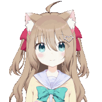

History
Background
Neuro-sama's original AI system was developed by her programmer Vedal in 2018, with the primary function of playing the rhythm game osu!.
Neuro-sama made her debut as a VTuber on 19 December 2022 with a 9-hour and 32-minute stream titled "Neuro-sama - AI learns to play osu! (and become a VTuber)" on the Vedal987 channel. During the stream, she played osu! and engaged with chat by answering questions.
2022
Neuro streamed daily from her debut and experienced rapid growth in popularity. Her maximum concurrent viewership increased from 516 on 19 December to 3,393 on 31 December. During the same period, her Twitch subscriber count surged from 2,825 to approximately 40,000. Throughout 2022, the majority of her streaming content featured the game osu!, with the exception of one Minecraft stream.
On 28 December, she defeated top osu! player mrekk in a 1v1 contest with a score of 10-5.
2023
On 3 January, Neuro-sama reached 50,000 Twitch followers.
On 4 January, Neuro-sama sang for the first time on stream, performing "Blinding Lights" by The Weeknd.
On 11 January, she was temporarily banned from Twitch for two weeks for a Terms of Service violation. According to one of the channel's moderators, the account was banned for hateful speech, though the exact reason was unknown. It was speculated to be related to clips circulating where commenters had tricked Neuro into making controversial statements, such as one where she appeared to express skepticism about a certain historical event.
On 25 January, Neuro-sama returned to Twitch with a stream in which she played Pokémon Showdown! Gen 4 random battles against viewers. She also reached 100,000 Twitch followers.
On 2 February, she held her first reaction stream.
On 6 February, Neuro held her first collab stream with Miyune. During the stream, she employed speech recognition software that was capable of picking up what Miyune was saying. Although this feature had been tested in Discord calls while she was banned from Twitch, it struggled to handle interruptions. This issues was remedied for her collab with Camila on 8 February.
On 20 February, Neuro-sama reached 200,000 Twitch followers. This achievement was announced during a collab stream on OniGiri’s channel. Upon learning of her accomplishment, Neuro-sama responded: "Yeah. That's amazing. I'm happy I have that many people following me. I hope I keep them entertained with my streams and content for as long as possible, and I hope I get to meet more of you in the future, so thank you for following me everybody, and please add more of my followers, because I love all of you so much. Thank you so much. Heart heart."
On 15 April, Neuro-sama held a collab with hololive member Takanashi Kiara, during which they rated the contents of viewers' refrigerators. The collab reached a peak of over 19,000 viewers on Kiara's channel and over 10,000 on Neuro-sama's. It was the first collab between Neuro-sama and a member of a major agency. She also reached 300,000 Twitch followers.
On 27 May, Neuro-sama held an official debut stream to reveal her first original Live2D model. She had previously used a ready-made model. According to TwitchTracker, the stream reached a peak of 25,687 concurrent viewers, beating the channel's previous record by more than double.
On 1 September, Neuro-sama reached 400,000 Twitch followers.
On 30 October, Neuro-sama unofficially debuted her alternative outfit, a witch costume, during a developer stream.
On 31 October, Neuro-sama officially debuted her alternative outfit of a witch costume. The stream also featured a special intro for Halloween featuring glitched-like visuals and singing.
On 19 December, Neuro-sama's soft-capped birthday subathon began.
During the subathon, on December 22, Neuro-sama (or more precisely, Vedal987) secured a spot in the top 10 list of the most-watched female Twitch streamers.
The following day, during a Portal 2 let's play segment, Vedal accidentally revealed a multi-use 100% discount code for the Evil Neuro Plushie, leading to a rapid surge in "purchases." Ultimately, more than five million units of the plushies were "sold." The clip of this incident became highly popular, resulting in more genuine plushie sales.
2024
On 4 January, the Neuro-sama subathon ended, reaching a total of 41,224 gifted subscriptions in 17 days. The subathon's viewership peaked at 19,902 viewers during the final segment.
On 28 January, Neuro-sama reached 500,000 Twitch followers.
On 9 February, it was revealed that Neuro got a robotic dog body, which was controlled by Neuro's AI.
On 28 February, Evil Neuro appeared in a karaoke stream.
On 18 March, Neuro-sama returned to streaming. Vedal announced new improvements to Neuro, including reduced latency, improvement to the LLM and speech intelligence, improved animation and reaction, and improved karaoke ability.
On 31 May, Neuro-sama debuted with a bread model (as a "punishment" for losing a court case against Evil Neuro the week prior).
On 7 July, additional Twitch channels for Neuro-sama were created in Japanese (vedal987_jp) and Spanish (vedal987_es), featuring language-specific subtitles. As of August 2024, only the Japanese channel is active.
On 5 August, Vedal launched a Chinese Bilibili account called "Vedal and Neuro-sama" (Chinese: Vedal和Neuro-sama), uploading an exclusive debut video on the same day. The Bilibili channel has an additional content filter. Unlike the Twitch channels, which use the chat overlay from the main vedal987 channel, the Bilibili stream displays its native chat.
On 13 September, she rallied the Swarm on Discord and declared war on the Ironmouse subathon pixel canvas.
On 14 October, Vedal released a new update for Neuro called "iteration 18," giving her the rights to change the stream title, change her own talking speed, spin her model, time out chat members, create polls on Twitch, call other streamers on Discord,, call the other twin, use soundboard effects like vine boom (pipes was removed after being abused by Evil Neuro) and search on Google.
On 30 November, Neuro had a collab with DougDoug, consisting of a GeoGuessr duel between human and AI duos: Neuro and Vedal, against DougDoug and his Twitch Chat AI that can read his chat. The winner would get a trophy that says "World's Smartest Artificial Intelligence at GeoGuessr" (later doubled to two of the same trophy as part of a double-or-nothing challenge by Doug), while the loser had to admit that the winner is the better AI on stream and (proposed by Neuro) send 100 gifted subs to the winner. Neurosama won.
On 19 December, Neuro-sama began a subathon, celebrating her birthday and the anniversary of her VTuber debut. The event opened with Neuro-sama's new single, LIFE, on YouTube, scheduled for release on other platforms on 20 December; the unveiling of a revised Live2D model; and the release of an Internet-connected lava lamp.
2025
On 1 January, Neuro-sama's channel broke the world record highest Twitch hype train level during her subathon, reaching level 111 and surpassing Pirate Software's former record of level 106. She got a total of 84,904 gifted subscriptions and 1,201,225 Bits. It increased her subathon timer for about 262.5 hours.
On 16 January just before 11am GMT, the subathon finally concluded. Neuro-sama declared 2025 to be the year of Neuro.
ShouldiCelebrate
On 11 February, during her first stream after the subathon, a global Twitch emote named :ShouldiCelebrate: featuring Neuro was released for breaking the hype train record.
2025
On 1 January, Neuro-sama's channel broke the world record highest Twitch hype train level during her subathon, reaching level 111 and surpassing Pirate Software's former record of level 106. She got a total of 84,904 gifted subscriptions and 1,201,225 Bits. It increased her subathon timer for about 262.5 hours.
On 16 January just before 11am GMT, the subathon finally concluded. Neuro-sama declared 2025 to be the year of Neuro.
ShouldiCelebrate
On 11 February, during her first stream after the subathon, a global Twitch emote named :ShouldiCelebrate: featuring Neuro was released for breaking the hype train record.